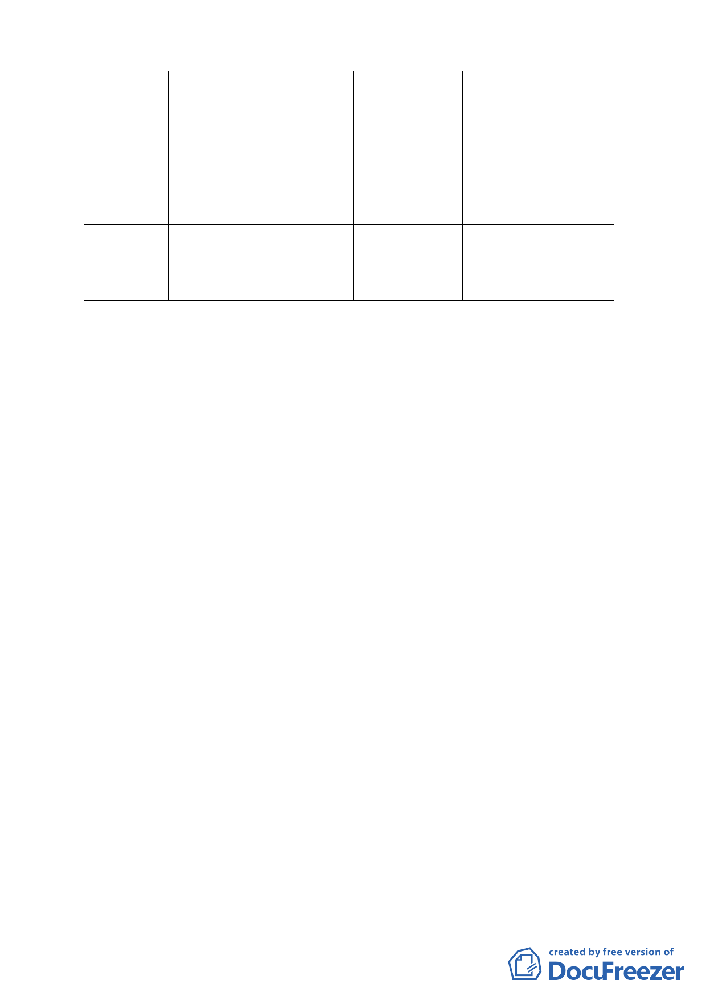

業等使用
■建築基地作
住宅使用樓
地板面積不
得少於 2/3
老舊社區
【民生東路
新社區-誠
美建設】
科技軸帶
【大彎北
段】
住宅用地
娛樂區
商業區
都市計畫書內
表列
都市計畫書內
表列
計畫內未規定
事項比照第三
種商業區規定
辦理
適用民生東路新社區
特定專用區相關使用
規定
（三）案經於 98 年 7 月 31 日邀本會委員、市府都市發展局、法
規會以及市府相關單位召開座談會，經由市府都市發展局
說明，及會上的討論和溝通，對於「廣場式開放空間」容
積獎勵適用及獎勵容積上限做成結論；茲彙整如下：
1.申請「廣場式開放空間」之容積獎勵適用條件如下：
第一類：土地使用為工業區者，且其相關管制皆依工業區相關
規定辦理者，不適用「廣場式開放空間」之申請條件。
例如：科技軸帶【皇昌】、科技軸帶【驪暉】
第二類：位於 97 年 6 月重劃完成內湖五期範圍，可比照第一種
商業區申請綜合設計放寬（因工業區無綜合設計放寬
規定），但其所增加容積需 1/2 回饋者，先依原都市計
畫規定適用綜合設計容積獎勵應依規定需 1/2 回饋；
再申請台北好好看「廣場式開放空間」獎勵。
例如：科技軸帶【華固】、科技軸帶【寶佳】
第三類：計畫名稱雖非屬商業區、住宅區，但其土地使用及相
關規定屬於商業區、住宅區者，得依現行土地使用比
照申請「廣場式開放空間」之獎勵。
例如：老舊社區【艋舺大道-都更公司】、【民生東路新
社區-誠美建設】與科技軸帶【大彎北段】
2.對於臺北好好看所給予之獎勵，仍應尊重原都市計畫所規範
之發展紋理，如現行都市計畫已有容積增加上限之規定，從
其規定，不宜突破；如現行都市計畫未規定者，則視個案之
地區發展容受力、環境改善貢獻與影響分別訂之。
-7-